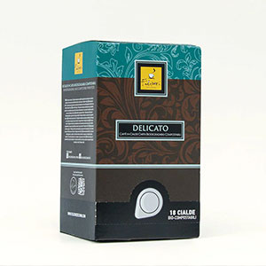

ჩვენი პრემიუმი პროდუქტები

პრემიუმი ყავის მარცვლები
ფრთხილად შერჩეული არაბიკა და რობუსტა მარცვლები უმჯობესი იტალიური რეგიონებიდან, შემწვარი სრულყოფილებამდე ავთენტური გემოს გამოცდილებისთვის.

ესპრესო კაფსულები
მოსახერხებელი, სრულყოფილად დოზირებული კაფსულები, რომლებიც უზრუნველყოფენ თანმიმდევრულ ხარისხს და მდიდარ გემოს ყველა ესპრესოს შოტში.
ხელოვნური ჩაის კოლექცია
დაასრულეთ თქვენი ყავის გამოცდილება ჩვენი ფრთხილად შერჩეული პრემიუმი ჩაის არჩევანით მთელი მსოფლიოდან.